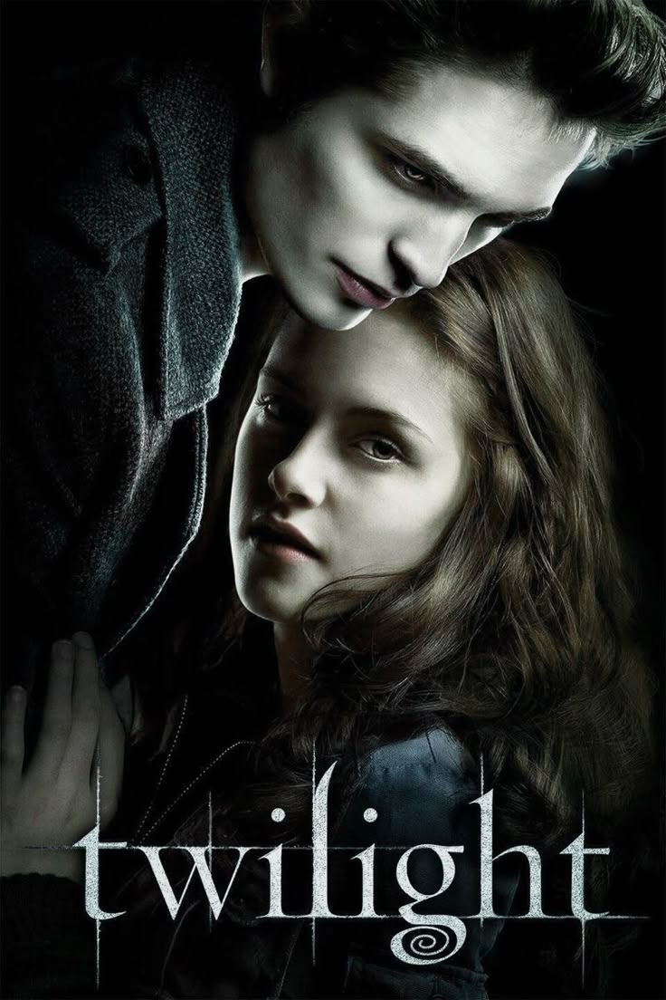
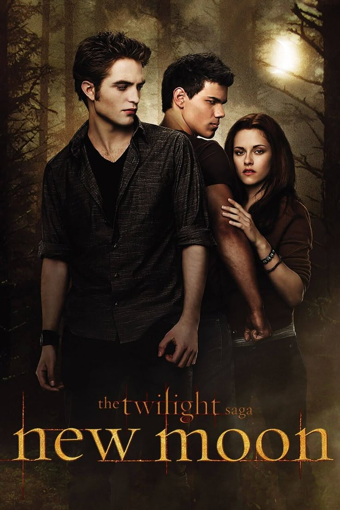
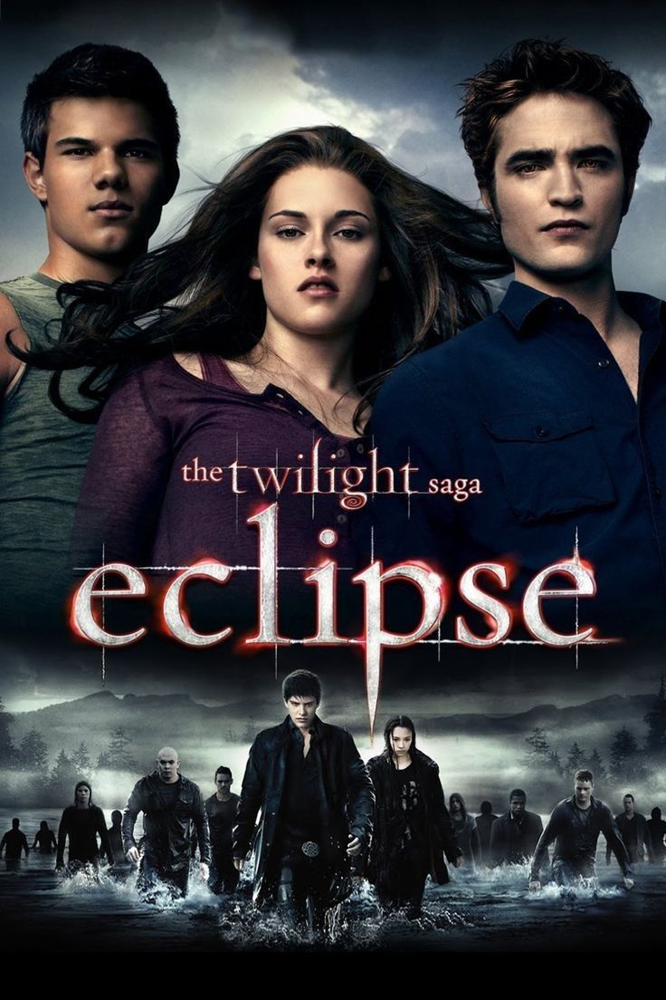
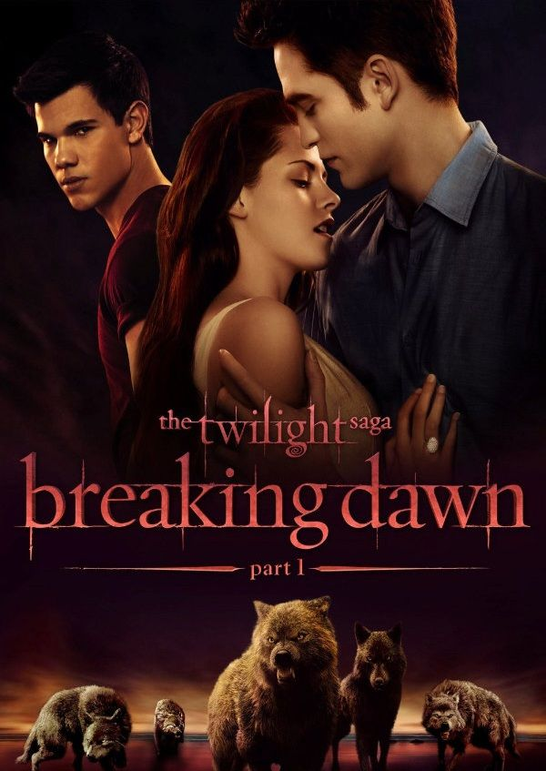
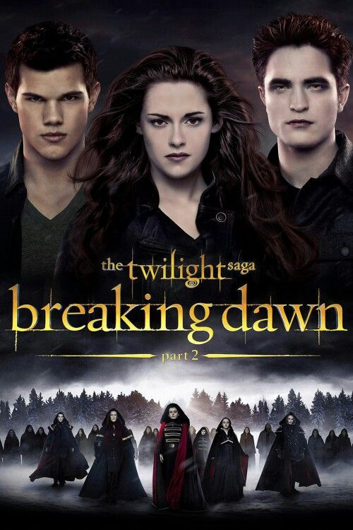

☆♡ Twilight (2008) ♡☆
The first film in the Twilight saga introduces Bella Swan, a 17-year-old who moves to Forks, Washington, to live with her father, Charlie. At her new school, she becomes fascinated by the mysterious and alluring Edward Cullen, who initially seems repulsed by her presence. As she gets closer to him, Bella discovers that Edward is a vampire, part of the Cullen family, who abstain from human blood. Despite the dangers, the two fall deeply in love. However, their relationship attracts the attention of a nomadic vampire, James, who becomes obsessed with hunting Bella for sport. With the help of the Cullens, Edward rescues Bella in a dramatic confrontation, killing James. The film ends with Bella recovering in the hospital, determined to stay with Edward despite the dangers, while a vengeful vampire, Victoria, watches from afar.
☆♡ New Moon (2009) ♡☆
In New Moon, Edward leaves Bella after an incident at her birthday party, fearing that his presence endangers her life. Heartbroken, Bella falls into a deep depression but finds solace in her growing friendship with Jacob Black. She soon discovers that Jacob is a shapeshifter who transforms into a wolf, part of a pack tasked with protecting their tribe from vampires. Meanwhile, Bella begins engaging in reckless behavior to "see" hallucinations of Edward. Believing Bella has died, Edward travels to Italy to provoke the Volturi, a powerful vampire coven, into killing him. Bella rushes to save him with the help of Alice, and they barely escape the Volturi, who warn that Bella must either be turned into a vampire or be killed. The movie ends with Edward promising to never leave again and proposing to Bella.
☆♡ Eclipse (2010) ♡☆
In Eclipse, the threat of Victoria looms as she seeks revenge for James’s death, creating an army of newborn vampires to attack the Cullens. Meanwhile, Bella struggles with her feelings for both Edward and Jacob, leading to tension between the two rivals. The Cullens and the Quileute wolf pack form an uneasy alliance to fight the newborns, training together for the impending battle. During the fight, Edward, Bella, and Seth (a young werewolf) confront Victoria and her strongest newborn, Riley, ultimately defeating them. Jacob is injured in battle, and Bella realizes she loves him but chooses Edward. The film concludes with Bella preparing for her transformation and agreeing to marry Edward.
☆♡ Breaking Dawn: Part 1 (2011) ♡☆
The first part of Breaking Dawn focuses on Bella and Edward’s wedding and honeymoon on a secluded island. Soon after, Bella discovers she is pregnant with a half-human, half-vampire child, a pregnancy that rapidly drains her life. The Cullens struggle to save her as the fetus grows stronger, while the Quileute wolf pack debates whether to attack, fearing the baby will be a threat. Jacob, torn between loyalty and love for Bella, ultimately breaks away from the pack to protect her. In a life-threatening birth, Bella gives birth to Renesmee, and Edward turns her into a vampire to save her life. The film ends with Bella awakening as a newborn vampire, her red eyes opening for the first time.
☆♡ Breaking Dawn: Part 2 (2012) ♡☆
The final installment follows Bella adjusting to her new life as a vampire, discovering her heightened abilities and her unique gift of a mental shield. When the Volturi learn of Renesmee’s existence, they mistake her for an immortal child, a dangerous type of vampire, and set out to destroy her and the Cullens. Alice has a vision of a brutal battle in which many are killed, including Carlisle and Jasper, but it is later revealed to be a warning to Aro. In the end, Alice proves that Renesmee poses no threat by introducing another half-vampire, Nahuel, who has peacefully coexisted with humans. The Volturi retreat, and the Cullens remain safe. The series concludes with Bella and Edward sharing a moment in their meadow, as Bella lifts her shield to let Edward into her thoughts for the first time, showing him her love, before they promise each other forever.
